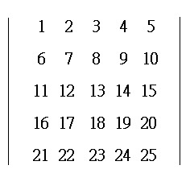
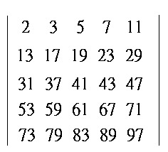

五階行列式
程式由網友 SuperMANganese 提供，可以計算一個 5×5 行列式的值。
更新日期: 2014年8月22日
程式一 (348 bytes，整數版)
程式需要在 CMPLX 模式下執行，因此在選擇新程式位置後，按 2 選用CMPLX模式。
注意: E 是按 EXP 。
ClrMemory: For 1→M to 20: X→Y: A→X: B→A: C→B: D→C:
M≧11 => M≦15 => -E7Y→Y: Y: ?→Y: i(E-7Y-Ans→D: Next:
0→Y: Lbl 0: Fix 0: -4: Lbl 1: For 0→M To 0 Step Ans+5:
.5(C+Conjg(C: Ans-Rnd(Ans: Ans(Rnd(A+Conjg(A))Rnd(B-Conjg(B))
-Rnd(B+Conjg(B))Rnd(A-Conjg(AM+:
.5(B+Conjg(B: Ans-Rnd(Ans: Ans(Rnd(C+Conjg(C))Rnd(A-Conjg(A))
-Rnd(A+Conjg(A))Rnd(C-Conjg(CM+:
.5(A+Conjg(A: Ans-Rnd(Ans: Ans(Rnd(B+Conjg(B))Rnd(C-Conjg(C))
-Rnd(C+Conjg(C))Rnd(B-Conjg(BM+:
.5(D-Conjg(D: Ans-Rnd(Ans: - 8-1×E14Ans(M-Conjg(M: iAns-Y→Y:
D→M: C→D: B→C: A→B: M→A: MM-: Next: M-4 => Goto 1:
Norm 1: .5(Y+Conjg(Y→M: ?→M: Ans+.5iM(Y-Conjg(Y→Y:
X→M: A→X: B→A: C→B: D→C: M→D: Goto 0
程式二 (346 bytes，三位小數版)
程式需要在 CMPLX 模式下執行，因此在選擇新程式位置後，按 2 選用CMPLX模式。
注意: E 是按 EXP 。
ClrMemory: For 1→M to 20: X→Y: A→X: B→A: C→B: D→C:
M≧11 => M≦15 => -E7Y→Y: Y: ?→Y: i(E-4Y-Ans→D: Next:
0→Y: Lbl 0: Fix 0: -4: Lbl 1: For 0→M To 0 Step Ans+5:
.5(C+Conjg(C: Ans-Rnd(Ans: Ans(Rnd(A+Conjg(A))Rnd(B-Conjg(B))
-Rnd(B+Conjg(B))Rnd(A-Conjg(AM+:
.5(B+Conjg(B: Ans-Rnd(Ans: Ans(Rnd(C+Conjg(C))Rnd(A-Conjg(A))
-Rnd(A+Conjg(A))Rnd(C-Conjg(CM+:
.5(A+Conjg(A: Ans-Rnd(Ans: Ans(Rnd(B+Conjg(B))Rnd(C-Conjg(C))
-Rnd(C+Conjg(C))Rnd(B-Conjg(BM+:
.5(D-Conjg(D: Ans-Rnd(Ans: - 12.5Ans(M-Conjg(M: iAns-Y→Y:
D→M: C→D: B→C: A→B: M→A: MM-: Next: M-4 => Goto 1:
Norm 1: .5(Y+Conjg(Y→M: ?→M: Ans+.5iM(Y-Conjg(Y→Y:
X→M: A→X: B→A: C→B: D→C: M→D: Goto 0
註1: 程式一的數據必須為整數，且絕對值須小於1000000 ; 程式二最多可有三位小數(需自行捨入),
且須絕值須小於1000；如希望程式能自動對數據四捨五入，可把第二行藍色換成:
(程式一) Y: ?→Y: Fix 0: i(E-7Rnd(Y)-Ans→D: Norm 1: Next:
(程式二) Y: ?→Y: Fix 3: i(E-7Rnd(Y)-Ans→D: Norm 1: Next:
註2: 程式運算步驟中可能會涉及一些大數的相減，準確度可能因此降低。(此問題亦存在於一般行列式程式)
例題1: 計算以下行列式的值。

按 Prog 1 再按 1 EXE 2 EXE 3 EXE 4 EXE 5 EXE 6 EXE 7 EXE 8 EXE 9 EXE 10 EXE
11 EXE 12 EXE 13 EXE 14 EXE 15 EXE 16 EXE 17 EXE 18 EXE 19 EXE 20
EXE 21 EXE 22 EXE 23 EXE 24 EXE 25 EXE (顯示答案為 0)
例題2: 計算以下行列式的值。

按 Prog 1
再按 2 EXE 3 EXE 5 EXE 7 EXE 11 EXE 13 EXE 17 EXE 19 EXE 23 EXE 29 EXE
31 EXE 37 EXE 41 EXE 43 EXE 47 EXE 53 EXE 59 EXE 61 EXE 67 EXE 71 EXE
73 EXE 79 EXE 83 EXE 89 EXE 97 EXE (顯示答案為 - 4656)
返回 CASIO fx-50FH、fx-3650P II、fx-50FH II及fx-50F PLUS 程式集